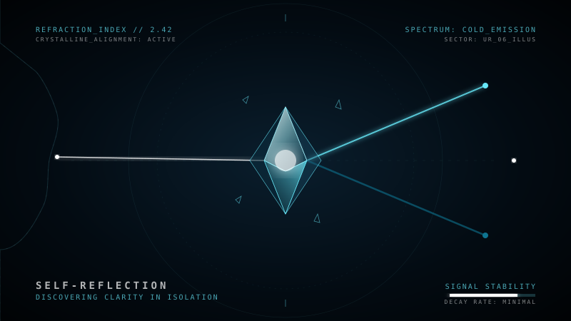
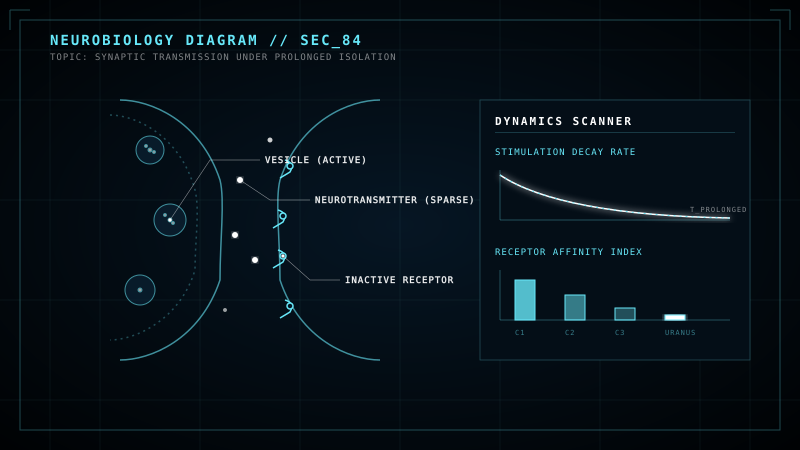

SAO THIÊN VƯƠNG
"..."
Bạn có đang ở tinh cầu này?

Bên Trong Tinh Cầu Quay Nghiêng Độc Đáo
...
Mối liên hệ Vũ trụ - Tâm lý học:
Sao Thiên Vương quay nghiêng độc nhất một góc 98 độ so với mặt phẳng quỹ đạo, giống như một kẻ lập dị tự quay đầu giữa vũ trụ rộng lớn. Sự tự ti của bạn cũng tựa như lăng kính méo mó che giấu đi vẻ đẹp độc bản của chính bạn. Hãy nhớ rằng, việc quay nghiêng đầy kiêu hãnh của Sao Thiên Vương tạo nên bản sắc độc nhất của nó, tương tự như sự khác biệt của bạn chính là giá trị đáng trân quý.
Những con số về sự nghi ngờ bản thân

Hội chứng kẻ giả mạo (Impostor Syndrome)
Dòng suy nghĩ lơ lửng
@phi_hanh_gia_044
"Tôi cảm thấy mình chỉ đang gặp may. Khi người khác phát hiện ra tôi kém cỏi thực sự, họ sẽ chê cười."
@phi_hanh_gia_182
"Tại sao tôi luôn làm sai những điều đơn giản? Tôi dường như không thể giỏi bằng ai cả."
@phi_hanh_gia_999
"Tôi ngại nói trước đám đông vì sợ rằng những gì mình phát biểu đều là ngớ ngẩn và sai lệch."

Nguồn gốc của sự nghi ngờ năng lực tự thân
Hậu quả của bộ lọc tự ti méo mó

Tháo bỏ lăng kính tự phán xét méo mó

Trục quay nghiêng 98 độ của Sao Thiên Vương

Tái cấu trúc nhận thức khách quan
Lăng Kính Lọc Suy Nghĩ
Nhập một suy nghĩ tự ti phán xét của bạn để lăng kính khúc xạ sự thật khách quan:
